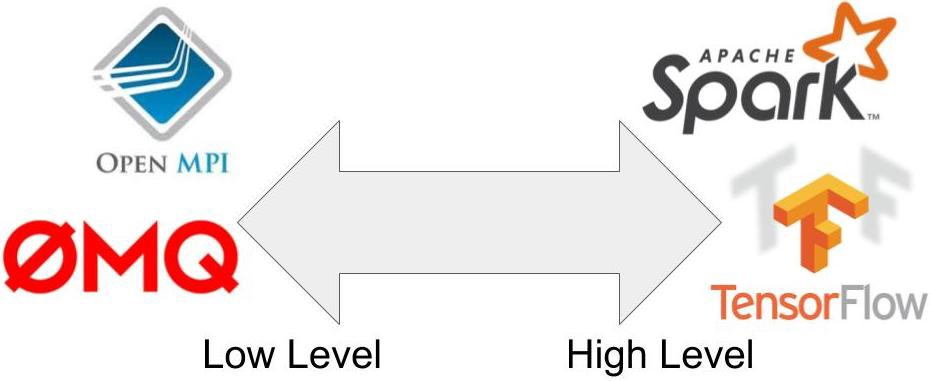
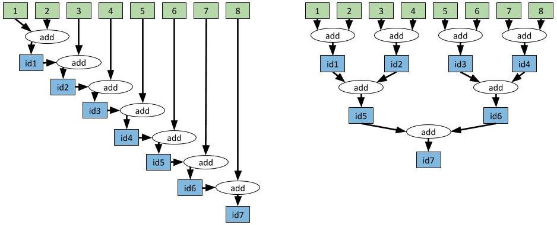

<!DOCTYPE html><html><head><meta charset="utf-8"><script type="text/javascript">!function(e,t,a,n,g){e[n]=e[n]||[],e[n].push({"gtm.start":(new Date).getTime(),event:"gtm.js"});var m=t.getElementsByTagName(a)[0],r=t.createElement(a);r.async=!0,r.src="https://www.googletagmanager.com/gtm.js?id=GTM-N4HVSTP",m.parentNode.insertBefore(r,m)}(window,document,"script","dataLayer")</script><title>(번역) Modern Parallel and Distributed Python-A Quick Tutorial on Ray | 딥백수</title><meta name="viewport" content="width=device-width,initial-scale=1,maximum-scale=1"><meta name="description" content="이번 포스팅은 Ray에 대해서 소개합니다. 먼저 이 포스팅은 Robert Nishihara의 허락을 받아, Modern Parallel and Distributed Python: A Quick Tutorial on Ray을 번역한 글임을 밝힙니다."><meta property="og:type" content="article"><meta property="og:title" content="(번역) Modern Parallel and Distributed Python-A Quick Tutorial on Ray"><meta property="og:url" content="https://deepbaksu.github.io/2020/09/01/20200902-A-Quick-Tutorial-on-Ray/index.html"><meta property="og:site_name" content="딥백수"><meta property="og:description" content="이번 포스팅은 Ray에 대해서 소개합니다. 먼저 이 포스팅은 Robert Nishihara의 허락을 받아, Modern Parallel and Distributed Python: A Quick Tutorial on Ray을 번역한 글임을 밝힙니다."><meta property="og:locale" content="ko_KR"><meta property="og:image" content="https://deepbaksu.github.io/2020/09/01/20200902-A-Quick-Tutorial-on-Ray/cloud.jpeg"><meta property="og:image" content="https://deepbaksu.github.io/2020/09/01/20200902-A-Quick-Tutorial-on-Ray/ray.png"><meta property="og:image" content="https://deepbaksu.github.io/2020/09/01/20200902-A-Quick-Tutorial-on-Ray/ray_summit.png"><meta property="og:image" content="https://deepbaksu.github.io/2020/09/01/20200902-A-Quick-Tutorial-on-Ray/distributed_computing_tools.jpeg"><meta property="og:image" content="https://deepbaksu.github.io/2020/09/01/20200902-A-Quick-Tutorial-on-Ray/aggregation.jpeg"><meta property="article:published_time" content="2020-09-01T15:15:52.000Z"><meta property="article:modified_time" content="2021-07-29T12:23:13.690Z"><meta property="article:author" content="deepbaksu"><meta property="article:tag" content="software engineering"><meta property="article:tag" content="Martin Hwang"><meta property="article:tag" content="Ray"><meta property="article:tag" content="distributed computing"><meta property="article:tag" content="parallel computing"><meta name="twitter:card" content="summary"><meta name="twitter:image" content="https://deepbaksu.github.io/2020/09/01/20200902-A-Quick-Tutorial-on-Ray/cloud.jpeg"><link rel="alternate" href="/atom.xml" title="딥백수" type="application/atom+xml"><link rel="icon" href="/favicon.ico"><link href="//fonts.googleapis.com/css?family=Source+Code+Pro" rel="stylesheet" type="text/css"><link href="https://fonts.googleapis.com/css2?family=Nanum+Gothic:wght@400;700;800&display=swap" rel="stylesheet"><script src="https://kit.fontawesome.com/c112df9384.js" crossorigin="anonymous"></script><meta name="naver-site-verification" content="e5b6f62f6f5f0eaac392f748172d143679f11ddb"><link href="https://cdnjs.cloudflare.com/ajax/libs/KaTeX/0.9.0/katex.min.css" rel="stylesheet" type="text/css"><link rel="stylesheet" href="/css/style.css"><meta name="generator" content="Hexo 5.4.0"><link rel="sitemap" type="application/xml" title="Sitemap" href="/sitemap.xml"></head></html><body><noscript><iframe src="https://www.googletagmanager.com/ns.html?id=GTM-N4HVSTP" height="0" width="0" style="display:none;visibility:hidden"></iframe></noscript><div id="container"><div id="wrap"><header id="header"><div id="banner"></div><div id="header-outer" class="outer"><div id="header-title" class="inner"><h1 id="logo-wrap"><a href="/" id="logo">딥백수</a></h1></div><div id="header-inner" class="inner"><nav id="main-nav"><a id="main-nav-toggle" class="nav-icon"></a> <a class="main-nav-link" href="/">홈</a> <a class="main-nav-link" href="/about">딥백수 소개</a> <a class="main-nav-link" href="/archives">아카이브</a></nav><nav id="sub-nav"><a id="nav-rss-link" class="nav-icon" href="/atom.xml" title="RSS Feed"></a> <a id="nav-github-btn" class="nav-icon" title="GitHub" target="_blank" rel="noopener" href="https://github.com/deepbaksu"><i class="fab fa-github"></i></a> <a id="nav-search-btn" class="nav-icon" title="검색"></a></nav><div id="search-form-wrap"><form action="//google.com/search" method="get" accept-charset="UTF-8" class="search-form"><input type="search" name="q" class="search-form-input" placeholder="Search"><button type="submit" class="search-form-submit">&#xF002;</button><input type="hidden" name="sitesearch" value="https://deepbaksu.github.io"></form></div></div></div></header><div class="outer"><section id="main"><article id="post-20200902-A-Quick-Tutorial-on-Ray" class="article article-type-post" itemscope itemprop="blogPost"><div class="article-meta"><a href="/2020/09/01/20200902-A-Quick-Tutorial-on-Ray/" class="article-date"><time datetime="2020-09-01T15:15:52.000Z" itemprop="datePublished">2020-09-02</time></a></div><div class="article-inner"><header class="article-header"><h1 class="article-title" itemprop="name">(번역) Modern Parallel and Distributed Python-A Quick Tutorial on Ray</h1><div class="article-author">by Martin Hwang</div></header><div class="article-entry" itemprop="articleBody"><p>이번 포스팅은 Ray에 대해서 소개합니다.</p><p>먼저 이 포스팅은 <a target="_blank" rel="noopener" href="https://github.com/robertnishihara">Robert Nishihara</a>의 허락을 받아, <a target="_blank" rel="noopener" href="https://towardsdatascience.com/modern-parallel-and-distributed-python-a-quick-tutorial-on-ray-99f8d70369b8">Modern Parallel and Distributed Python: A Quick Tutorial on Ray</a>을 번역한 글임을 밝힙니다.</p><h2 id="what-is-ray"><a class="markdownIt-Anchor" href="#what-is-ray"></a> What is <a target="_blank" rel="noopener" href="https://github.com/ray-project/ray">Ray</a>?</h2><p><a target="_blank" rel="noopener" href="https://github.com/ray-project/ray">Ray</a>는 파이썬에서 병렬, 분산 프로그래밍을 위한 오픈소스 프로젝트입니다.</p><p>병렬, 분산 컴퓨팅은 현대 애플리케이션을 구성하는 요소 중 하나로 자리잡았습니다. 우리는 필요에 따라 멀티코어나 여러 대의 머신의 리소스를 최대한 활용해서 애플리케이션을 가속해야할 필요가 있습니다.</p><p><em>웹 사이트를 크롤링하거나 사용자 질의에 응답하는 소프트웨어들은 누군가의 노트북에서 돌아가는 single thread기반의 프로그램이 아니고, 서로 통신하고 상호작용하는 서비스 집합이라고 볼 수 있습니다</em></p><p></p><blockquote><p>(클라우드 컴퓨팅은 메모리, 연산, 스토리지 등 다방면으로 끊임없는 확장성을 제공하고있습니다. 클라우드가 제공하는 이러한 이점에 적절하게 대응하기 위해서는 분산 어플리케이션을 만들 수 있는 새로운 도구가 필요합니다)</p></blockquote><p>이번 포스팅은 Ray를 사용해서 병렬,분산 어플리케이션을 만드는 방법에 대해서 설명합니다.</p><h2 id="why-ray"><a class="markdownIt-Anchor" href="#why-ray"></a> Why Ray?</h2><p>많은 튜토리얼들이 <a target="_blank" rel="noopener" href="https://docs.python.org/3/library/multiprocessing.html">Python의 multiprocessing 모듈</a>을 어떻게 사용하는지 설명합니다.</p><p>하지만 Python의 multiprocessing 모듈은 한계점을 가지고 있어 현대 애플리케이션이 요구하는 분산, 병렬에 대한 필수사항을 충족하지 못합니다.</p><p>현대 애플리케이션이 요구하는 분산, 병렬처리에 대한 필수사항은 다음과 같습니다.</p><ul><li>같은 코드를 한대 이상의 머신(machine)에서 작동시켜야함</li><li>state를 가지고, 통신이 가능한 <a target="_blank" rel="noopener" href="https://en.wikipedia.org/wiki/Actor_model">actor</a>와 <a target="_blank" rel="noopener" href="https://en.wikipedia.org/wiki/Microservices">microservice</a>를 만들 수 있어야함</li><li>machine failures를 깔끔하게 다룰 수 있어야함</li><li>대규모 객체와 수치 데이터를 효율적으로 다룰 수 있어야함</li></ul><p><a target="_blank" rel="noopener" href="https://github.com/ray-project/ray">Ray</a>는 위에서 언급한 요구사항을 모두 충족합니다. 또한 간단한 작업을 단순하게 만들며, 복잡한 동작을 하게끔 프로그래밍하는 것 또한 가능합니다.</p><p></p><p><em>다른 회사들이 자신들의 Python 프로덕션을 확장하기 위해서 Ray를 어떻게 활용하고있는지 배우고싶다면, <a target="_blank" rel="noopener" href="https://events.linuxfoundation.org/ray-summit/?utm_source=robert&amp;utm_medium=blog&amp;utm_campaign=ray_summit#featuredspeakers">Ray Summit</a>에 등록하세요!</em></p><p></p><h2 id="necessary-concepts"><a class="markdownIt-Anchor" href="#necessary-concepts"></a> Necessary Concepts</h2><p>전통적으로 프로그래밍은 <strong>1). 함수(Functions)</strong> , <strong>2).클래스(Classes)</strong> 라는 핵심 개념에 의존합니다. 생각해보면 우리는 함수와 클래스만으로 많은 애플리케이션들을 만들어왔습니다.</p><p>하지만, 함수와 클래스로 구성된 애플리케이션을 분산 환경으로 마이그레이션하려고하면 함수, 클래스라는 개념을 사용할 수 없게됩니다.</p><p>따라서 현재까지 알려진 병렬, 분산 도구를 활용해서 싱글 스레드 애플리케이션을 병렬, 분산 애플리케이션으로 마이그레이션을 하기 위해서는 애플리케이션 코드를 처음부터 다시 작성해야합니다.</p><p>현재까지 알려진 병렬, 분산도구는 저수준에서 고수준까지 다양한 도구들이 있습니다.</p><p>먼저 저수준 도구로는 메세지의 송수신을 저수준의 프리미티브로 제공하는 <a target="_blank" rel="noopener" href="https://www.open-mpi.org/">OpenMPI</a>, <a target="_blank" rel="noopener" href="https://docs.python.org/3/library/multiprocessing.html">Python Multiprocessing</a>, <a target="_blank" rel="noopener" href="https://zeromq.org/">ZeroMQ</a>이 있습니다. 이 도구들은 분산, 병렬 환경을 위한 강력한 기능들을 제공합니다. 하지만, 전통적인 프로그래밍과는 다른 추상화 개념을 사용합니다. 이로 인해 위 도구들을 활용해서 기존의 싱글 스레드 애플리케이션을 분산, 병렬 어플리케이션으로 마이그레이션하기 위해서는 코드 전체를 재작성해야합니다.</p><p>또 다른 예로 도메인에 특화되어 고수준의 추상화를 제공하는 도구들이 있습니다. 딥러닝 모델을 학습하기 위한 <a target="_blank" rel="noopener" href="https://www.tensorflow.org/">TensorFlow</a>, 데이터와 SQL 처리를 위한 <a target="_blank" rel="noopener" href="https://spark.apache.org/">Spark</a>, 스트림 처리를 위한 <a target="_blank" rel="noopener" href="https://flink.apache.org/">Flink</a>가 대표적입니다. 이 도구들은 neural network나 데이터셋, 스트림에 대한 고수준의 추상화 API를 제공합니다. 하지만, 고수준 추상화를 제공하는 도구들 역시 <strong>직렬화된 프로그래밍(serial programming)</strong> 에서 사용하는 추상화와 다르기 때문에, 애플리케이션 코드 전체를 그에 맞게 재작성해줘야하는 단점이 있습니다.</p><p></p><blockquote><p>(분산 컴퓨팅을 위한 도구들. 왼쪽은 저수준의 추상화 API를 지원하는 도구, 오른쪽은 고수준의 추상화 API를 제공하는 도구)</p></blockquote><p>Ray는 위에서 설명한 도구들과 같은 고수준, 저수준이 아닌 중간수준에 위치합니다. Ray는 함수와 클래스를 task, actor라고 불리는 분산환경에 적합한 형태로 변환하며, 이를 통해 병렬, 분산 컴퓨팅을 지원하는 메커니즘을 가지고 있습니다. 따라서 사용자들은 이전과 다르게 코드를 재작성 없이 기존의 함수와 클래스 구조를 유지하면서 분산, 병렬 프로그래밍을 할 수 있습니다.</p><h2 id="starting-ray"><a class="markdownIt-Anchor" href="#starting-ray"></a> Starting Ray</h2><p>Ray의 <code>ray.init()</code>명령어는 Ray에서 사용하는 프로세스들을 모두 구동합니다.</p><p>만약 클러스터 환경을 이용해서 분산 컴퓨팅을 하고자 한다면, 클러스터의 주소(address)를 입력하는 코드 라인 하나만 변경하면 됩니다.</p><p><code>ray.init()</code>명령어로 구동되는 Ray의 프로세스들은 아래와 같습니다.</p><ul><li><strong>Worker</strong> : 파이썬의 함수를 병렬적으로 실행할 프로세스(대략 하나의 worker는 하나의 CPU 코어를 의미합니다).</li><li><strong>Scheduler</strong> : task들을 worker 혹은 다른 머신에 할당하기 위한 스켸쥴러(task란 Ray에 사용되는 파이썬 함수 혹은 메소드로, Ray에 의해 스켸쥴링되는 단위).</li><li><strong>Shared memory object store</strong> : 워커(worker)들간 객체를 효율적으로 공유하기 위한 공유메모리(copy 발생이 없는)</li><li><strong>Inmemory database</strong> : 머신 실패(machine failure)와 같은 이벤트 상황에서 task들을 반환하기 위해 메타 데이터를 저장하는 데이터베이스</li></ul><p><em>Ray worker는 thread가 아니며, thread와는 다른 개념의 process입니다. Python은 GIL(Global Interpreter Lock)으로 인해 multi-threding 지원에 한계가 있습니다.</em></p><h2 id="parallelism-with-tasks"><a class="markdownIt-Anchor" href="#parallelism-with-tasks"></a> Parallelism with Tasks</h2><p><code>@ray.remote</code>라는 데코레이터를 함수 위에 선언해주는 것만으로 파이썬 함수를 Ray에서 실행 가능한 <em>remote function</em> 으로 변경할 수 있습니다.</p><p>(<em>remote function은 Ray의 프로세스에 의해 비동기적으로 실행됩니다.</em>)</p><p>아래 예제와 같이 함수 <code>f</code>를 <code>@ray.remote</code> 데코레이터를 통해서 <em>remote function</em> 으로 변경했다면, <code>f.remote()</code>를 호출해서 함수를 실행할 수 있습니다. 이때, 호출된 <code>f.remote()</code>는 즉각적으로 future를 반환하고 실제 함수의 실행은 백그라운드에서 진행됩니다.</p><p>(<em><a target="_blank" rel="noopener" href="https://en.wikipedia.org/wiki/Futures_and_promises">future</a>는 나중에 반환될 함수의 출력값에 대한 참조입니다.</em>)</p><p>아래 예제에서 <code>f.remote()</code>에 대한 호출이 즉시 반환되고 다음 <em>remote function</em> 이 실행되기 때문에, 백그라운드에서 실행되는 <code>f</code>에 대한 4개의 복사본(task)은 단순히 해당 라인을 4번 실행하는 것으로 분산, 병렬로 실행할 수 있습니다.</p><p>파이썬 함수 <code>f</code>를 <em>remote function</em> 으로 바꾸기 위해서는 함수에 <code>@ray.remote</code>라는 데코레이터를 선언해줘야합니다. 그리고 함수를 <code>f.remote()</code>로 호출하면 즉시 future를 리턴합니다. 그리고 실제 함수의 실행은 백그라운드에서 실행됩니다.</p><figure class="highlight python"><table><tr><td class="gutter"><pre><span class="line">1</span><br><span class="line">2</span><br><span class="line">3</span><br><span class="line">4</span><br><span class="line">5</span><br><span class="line">6</span><br><span class="line">7</span><br><span class="line">8</span><br><span class="line">9</span><br><span class="line">10</span><br><span class="line">11</span><br><span class="line">12</span><br><span class="line">13</span><br><span class="line">14</span><br><span class="line">15</span><br><span class="line">16</span><br><span class="line">17</span><br><span class="line">18</span><br><span class="line">19</span><br></pre></td><td class="code"><pre><span class="line"><span class="keyword">import</span> ray</span><br><span class="line"><span class="keyword">import</span> time</span><br><span class="line"></span><br><span class="line"><span class="comment"># Start Ray.</span></span><br><span class="line">ray.init()</span><br><span class="line"></span><br><span class="line"><span class="meta">@ray.remote</span></span><br><span class="line"><span class="function"><span class="keyword">def</span> <span class="title">f</span>(<span class="params">x</span>):</span></span><br><span class="line">    time.sleep(<span class="number">1</span>)</span><br><span class="line">    <span class="keyword">return</span> x</span><br><span class="line"></span><br><span class="line"><span class="comment"># Start 4 tasks in parallel.</span></span><br><span class="line">result_ids = []</span><br><span class="line"><span class="keyword">for</span> i <span class="keyword">in</span> <span class="built_in">range</span>(<span class="number">4</span>):</span><br><span class="line">    result_ids.append(f.remote(i))</span><br><span class="line"></span><br><span class="line"><span class="comment"># Wait for the tasks to complete and retrieve the results.</span></span><br><span class="line"><span class="comment"># With at least 4 cores, this will take 1 second.</span></span><br><span class="line">results = ray.get(result_ids)  <span class="comment"># [0, 1, 2, 3]</span></span><br></pre></td></tr></table></figure><h3 id="task-dependencies"><a class="markdownIt-Anchor" href="#task-dependencies"></a> Task Dependencies</h3><p>task는 또 다른 task에 의존할 수 있습니다.</p><p>아래 예제에서 <code>multiply_matrices</code> task는 두개의 <code>create_matrix</code> task의 결과를 사용합니다. 따라서 첫번째 두 task의 출력은 자동으로 세번째 task의 인자로 입력됩니다.</p><p>결론적으로, 아래 예제를 실행해보면, <code>multiply_matrices</code>는 첫번째 두 task의 출력의 값이 반환되기 전까지는 실행되지 않습니다.</p><p>이러한 방식으로 task들을 arbitrary DAG dependencies로 구성할 수 있습니다.</p><figure class="highlight python"><table><tr><td class="gutter"><pre><span class="line">1</span><br><span class="line">2</span><br><span class="line">3</span><br><span class="line">4</span><br><span class="line">5</span><br><span class="line">6</span><br><span class="line">7</span><br><span class="line">8</span><br><span class="line">9</span><br><span class="line">10</span><br><span class="line">11</span><br><span class="line">12</span><br><span class="line">13</span><br><span class="line">14</span><br><span class="line">15</span><br><span class="line">16</span><br></pre></td><td class="code"><pre><span class="line"><span class="keyword">import</span> numpy <span class="keyword">as</span> np</span><br><span class="line"></span><br><span class="line"><span class="meta">@ray.remote</span></span><br><span class="line"><span class="function"><span class="keyword">def</span> <span class="title">create_matrix</span>(<span class="params">size</span>):</span></span><br><span class="line">    <span class="keyword">return</span> np.random.normal(size=size)</span><br><span class="line"></span><br><span class="line"><span class="meta">@ray.remote</span></span><br><span class="line"><span class="function"><span class="keyword">def</span> <span class="title">multiply_matrices</span>(<span class="params">x, y</span>):</span></span><br><span class="line">    <span class="keyword">return</span> np.dot(x, y)</span><br><span class="line"></span><br><span class="line">x_id = create_matrix.remote([<span class="number">1000</span>, <span class="number">1000</span>])</span><br><span class="line">y_id = create_matrix.remote([<span class="number">1000</span>, <span class="number">1000</span>])</span><br><span class="line">z_id = multiply_matrices.remote(x_id, y_id)</span><br><span class="line"></span><br><span class="line"><span class="comment"># Get the results.</span></span><br><span class="line">z = ray.get(z_id)</span><br></pre></td></tr></table></figure><h3 id="aggregating-values-efficiently"><a class="markdownIt-Anchor" href="#aggregating-values-efficiently"></a> Aggregating Values Efficiently</h3><p>task 의존성을 잘 설계하면 효율적인 방식으로 작업을 수행할 수 있습니다.</p><p>예를 들어 아래의 그림처럼 8개의 정수를 더한다고 생각해봅시다.</p><p>매우 간단한 예제이지만, 실제로 이러한 형태로 큰 벡터를 통합하는 것은 애플리케이션에 큰 병목이 되기도 합니다. 이런 병목 지점에서 task 의존성을 잘 설계한다면, 단 한줄의 코드 변경으로 시간 복잡도를 선형 시간에서 로그메틱 시간으로 변경할 수 있습니다.</p><p></p><blockquote><p>(두 연산 그래프는 같은 결과를 반환하지만, 좌측 그림은 의존성 그래프의 깊이가 7이며, 우측 그림은 의존성 그래프의 깊이가 3입니다. 이 경우 우측 연산 그래프의 연산이 더 빠릅니다)</p></blockquote><p>위에서 설명한데로 하나의 task에서 생성된 출력을 다른 task의 입력으로 사용하기 위해서는 첫번째 task로부터 반환받은 future를 두번째 task의 입력으로 넣으면 됩니다.</p><p>이때, 두번째 task가 첫번째 task의 출력을 의존하고있으면 두번째 task는 첫번째 task가 끝나기 전에는 실행되지 않습니다.</p><p>task 의존성은 자동으로 ray의 스켸쥴러가 추적하고 관리하므로, 만약 분산환경일 경우, 첫번째 task의 출력은 자동으로 두번째 task가 있는 머신으로 보내져 실행되게됩니다.</p><figure class="highlight python"><table><tr><td class="gutter"><pre><span class="line">1</span><br><span class="line">2</span><br><span class="line">3</span><br><span class="line">4</span><br><span class="line">5</span><br><span class="line">6</span><br><span class="line">7</span><br><span class="line">8</span><br><span class="line">9</span><br><span class="line">10</span><br><span class="line">11</span><br><span class="line">12</span><br><span class="line">13</span><br><span class="line">14</span><br><span class="line">15</span><br><span class="line">16</span><br><span class="line">17</span><br><span class="line">18</span><br><span class="line">19</span><br><span class="line">20</span><br><span class="line">21</span><br><span class="line">22</span><br><span class="line">23</span><br><span class="line">24</span><br><span class="line">25</span><br><span class="line">26</span><br><span class="line">27</span><br><span class="line">28</span><br></pre></td><td class="code"><pre><span class="line"><span class="keyword">import</span> time</span><br><span class="line"></span><br><span class="line"><span class="meta">@ray.remote</span></span><br><span class="line"><span class="function"><span class="keyword">def</span> <span class="title">add</span>(<span class="params">x, y</span>):</span></span><br><span class="line">    time.sleep(<span class="number">1</span>)</span><br><span class="line">    <span class="keyword">return</span> x + y</span><br><span class="line"></span><br><span class="line"><span class="comment"># Aggregate the values slowly. This approach takes O(n) where n is the</span></span><br><span class="line"><span class="comment"># number of values being aggregated. In this case, 7 seconds.</span></span><br><span class="line">id1 = add.remote(<span class="number">1</span>, <span class="number">2</span>)</span><br><span class="line">id2 = add.remote(id1, <span class="number">3</span>)</span><br><span class="line">id3 = add.remote(id2, <span class="number">4</span>)</span><br><span class="line">id4 = add.remote(id3, <span class="number">5</span>)</span><br><span class="line">id5 = add.remote(id4, <span class="number">6</span>)</span><br><span class="line">id6 = add.remote(id5, <span class="number">7</span>)</span><br><span class="line">id7 = add.remote(id6, <span class="number">8</span>)</span><br><span class="line">result = ray.get(id7)</span><br><span class="line"></span><br><span class="line"><span class="comment"># Aggregate the values in a tree-structured pattern. This approach</span></span><br><span class="line"><span class="comment"># takes O(log(n)). In this case, 3 seconds.</span></span><br><span class="line">id1 = add.remote(<span class="number">1</span>, <span class="number">2</span>)</span><br><span class="line">id2 = add.remote(<span class="number">3</span>, <span class="number">4</span>)</span><br><span class="line">id3 = add.remote(<span class="number">5</span>, <span class="number">6</span>)</span><br><span class="line">id4 = add.remote(<span class="number">7</span>, <span class="number">8</span>)</span><br><span class="line">id5 = add.remote(id1, id2)</span><br><span class="line">id6 = add.remote(id3, id4)</span><br><span class="line">id7 = add.remote(id5, id6)</span><br><span class="line">result = ray.get(id7)</span><br></pre></td></tr></table></figure><p>위의 코드는 명확합니다. 하지만, 이를 <code>while</code> loop를 통해 구현한다면 더 간결하게 구현할 수 있습니다.</p><figure class="highlight python"><table><tr><td class="gutter"><pre><span class="line">1</span><br><span class="line">2</span><br><span class="line">3</span><br><span class="line">4</span><br><span class="line">5</span><br><span class="line">6</span><br><span class="line">7</span><br><span class="line">8</span><br><span class="line">9</span><br><span class="line">10</span><br><span class="line">11</span><br></pre></td><td class="code"><pre><span class="line"><span class="comment"># Slow approach.</span></span><br><span class="line">values = [<span class="number">1</span>, <span class="number">2</span>, <span class="number">3</span>, <span class="number">4</span>, <span class="number">5</span>, <span class="number">6</span>, <span class="number">7</span>, <span class="number">8</span>]</span><br><span class="line"><span class="keyword">while</span> <span class="built_in">len</span>(values) &gt; <span class="number">1</span>:</span><br><span class="line">    values = [add.remote(values[<span class="number">0</span>], values[<span class="number">1</span>])] + values[<span class="number">2</span>:]</span><br><span class="line">result = ray.get(values[<span class="number">0</span>])</span><br><span class="line"></span><br><span class="line"><span class="comment"># Fast approach.</span></span><br><span class="line">values = [<span class="number">1</span>, <span class="number">2</span>, <span class="number">3</span>, <span class="number">4</span>, <span class="number">5</span>, <span class="number">6</span>, <span class="number">7</span>, <span class="number">8</span>]</span><br><span class="line"><span class="keyword">while</span> <span class="built_in">len</span>(values) &gt; <span class="number">1</span>:</span><br><span class="line">    values = values[<span class="number">2</span>:] + [add.remote(values[<span class="number">0</span>], values[<span class="number">1</span>])]</span><br><span class="line">result = ray.get(values[<span class="number">0</span>])</span><br></pre></td></tr></table></figure><h2 id="from-classes-to-actors"><a class="markdownIt-Anchor" href="#from-classes-to-actors"></a> From Classes to Actors</h2><p>클래스없이 좋은 애플리케이션을 만드는 것은 어려운 일입니다. 그리고 이는 분산환경에서도 마찬가지로 어렵습니다.</p><p>클래스 데코레이터 <code>@ray.remote</code>를 사용하면 Ray에서 파이썬 클래스를 사용할 수 있습니다. 클래스를 인스턴스화하면 Ray는 새로운 액터(Actor)를 생성합니다. 액터는 분산환경 어딘가에서 실행되지만 객체의 복제본(object copy)을 유지하는 프로세스입니다.</p><p>액터의 메소드를 실행하면 Ray는 해당 메소드를 액터 프로세스 위에서 작동하는 task로 변환합니다. 액터 프로세스 위에서 작동하는 task는 액터의 상태(state)에 접근이 가능하고 상태를 변경할 수 있습니다. 이러한 방법으로 액터는 액터의 상태값을 여러 task간 공유합니다.</p><p>개별적인 액터는 메소드를 직렬로 실행하며(블럭킹), 액터의 메소드는 atomic 속성을 갖습니다. 따라서 race condition이 발생하지 않게됩니다. 액터를 이용한 병렬성은 다수의 액터를 생성하는 방식으로 구현합니다.</p><p>아래 예제는 액터를 사용하는 간단한 예제입니다. <code>Counter.remote()</code>는 새로운 액터 프로세스를 생성합니다.</p><p>액터 프로세스는 <code>Counter</code> 객체의 복사본을 갖으며, <code>c.get_value.remote()</code>와 <code>c.inc.remote()</code>는 원격 액터 프로세스(remote actor process)에서 task를 실행하고 액터의 상태를 변경합니다.</p><figure class="highlight python"><table><tr><td class="gutter"><pre><span class="line">1</span><br><span class="line">2</span><br><span class="line">3</span><br><span class="line">4</span><br><span class="line">5</span><br><span class="line">6</span><br><span class="line">7</span><br><span class="line">8</span><br><span class="line">9</span><br><span class="line">10</span><br><span class="line">11</span><br><span class="line">12</span><br><span class="line">13</span><br><span class="line">14</span><br><span class="line">15</span><br><span class="line">16</span><br><span class="line">17</span><br><span class="line">18</span><br><span class="line">19</span><br><span class="line">20</span><br><span class="line">21</span><br></pre></td><td class="code"><pre><span class="line"><span class="meta">@ray.remote</span></span><br><span class="line"><span class="class"><span class="keyword">class</span> <span class="title">Counter</span>(<span class="params"><span class="built_in">object</span></span>):</span></span><br><span class="line">    <span class="function"><span class="keyword">def</span> <span class="title">__init__</span>(<span class="params">self</span>):</span></span><br><span class="line">        self.x = <span class="number">0</span></span><br><span class="line"></span><br><span class="line">    <span class="function"><span class="keyword">def</span> <span class="title">inc</span>(<span class="params">self</span>):</span></span><br><span class="line">        self.x += <span class="number">1</span></span><br><span class="line"></span><br><span class="line">    <span class="function"><span class="keyword">def</span> <span class="title">get_value</span>(<span class="params">self</span>):</span></span><br><span class="line">        <span class="keyword">return</span> self.x</span><br><span class="line"></span><br><span class="line"><span class="comment"># Create an actor process.</span></span><br><span class="line">c = Counter.remote()</span><br><span class="line"></span><br><span class="line"><span class="comment"># Check the actor&#x27;s counter value.</span></span><br><span class="line"><span class="built_in">print</span>(ray.get(c.get_value.remote()))  <span class="comment"># 0</span></span><br><span class="line"></span><br><span class="line"><span class="comment"># Increment the counter twice and check the value again.</span></span><br><span class="line">c.inc.remote()</span><br><span class="line">c.inc.remote()</span><br><span class="line"><span class="built_in">print</span>(ray.get(c.get_value.remote()))  <span class="comment"># 2</span></span><br></pre></td></tr></table></figure><h3 id="actor-handles"><a class="markdownIt-Anchor" href="#actor-handles"></a> Actor Handles</h3><p>위에서 우리는 파이썬의 메인 스크립트에서 액터의 메소드를 실행하는 예제를 살펴봤습니다.</p><p>액터의 강력한 장점은 핸들(handle)을 액터에 전달할 수 있는 것입니다. 이는 다른 액터나 다른 task가 동일한 액터의 메소드를 호출할 수 있게 해줍니다.</p><p>아래 예제는 메세지를 저장하는 액터를 생성합니다. 몇몇의 worker task는 반복적으로 messages를 액터로 푸쉬합니다. 그리고 파이썬 메인 스크립트는 주기적으로 이 메세지를 읽습니다.</p><figure class="highlight python"><table><tr><td class="gutter"><pre><span class="line">1</span><br><span class="line">2</span><br><span class="line">3</span><br><span class="line">4</span><br><span class="line">5</span><br><span class="line">6</span><br><span class="line">7</span><br><span class="line">8</span><br><span class="line">9</span><br><span class="line">10</span><br><span class="line">11</span><br><span class="line">12</span><br><span class="line">13</span><br><span class="line">14</span><br><span class="line">15</span><br><span class="line">16</span><br><span class="line">17</span><br><span class="line">18</span><br><span class="line">19</span><br><span class="line">20</span><br><span class="line">21</span><br><span class="line">22</span><br><span class="line">23</span><br><span class="line">24</span><br><span class="line">25</span><br><span class="line">26</span><br><span class="line">27</span><br><span class="line">28</span><br><span class="line">29</span><br><span class="line">30</span><br><span class="line">31</span><br><span class="line">32</span><br><span class="line">33</span><br><span class="line">34</span><br><span class="line">35</span><br><span class="line">36</span><br><span class="line">37</span><br><span class="line">38</span><br><span class="line">39</span><br><span class="line">40</span><br><span class="line">41</span><br><span class="line">42</span><br><span class="line">43</span><br><span class="line">44</span><br></pre></td><td class="code"><pre><span class="line"><span class="keyword">import</span> time</span><br><span class="line"></span><br><span class="line"><span class="meta">@ray.remote</span></span><br><span class="line"><span class="class"><span class="keyword">class</span> <span class="title">MessageActor</span>(<span class="params"><span class="built_in">object</span></span>):</span></span><br><span class="line">    <span class="function"><span class="keyword">def</span> <span class="title">__init__</span>(<span class="params">self</span>):</span></span><br><span class="line">        self.messages = []</span><br><span class="line"></span><br><span class="line">    <span class="function"><span class="keyword">def</span> <span class="title">add_message</span>(<span class="params">self, message</span>):</span></span><br><span class="line">        self.messages.append(message)</span><br><span class="line"></span><br><span class="line">    <span class="function"><span class="keyword">def</span> <span class="title">get_and_clear_messages</span>(<span class="params">self</span>):</span></span><br><span class="line">        messages = self.messages</span><br><span class="line">        self.messages = []</span><br><span class="line">        <span class="keyword">return</span> messages</span><br><span class="line"></span><br><span class="line"><span class="comment"># Define a remote function which loops around and pushes</span></span><br><span class="line"><span class="comment"># messages to the actor.</span></span><br><span class="line"><span class="meta">@ray.remote</span></span><br><span class="line"><span class="function"><span class="keyword">def</span> <span class="title">worker</span>(<span class="params">message_actor, j</span>):</span></span><br><span class="line">    <span class="keyword">for</span> i <span class="keyword">in</span> <span class="built_in">range</span>(<span class="number">100</span>):</span><br><span class="line">        time.sleep(<span class="number">1</span>)</span><br><span class="line">        message_actor.add_message.remote(</span><br><span class="line">            <span class="string">&quot;Message &#123;&#125; from worker &#123;&#125;.&quot;</span>.<span class="built_in">format</span>(i, j))</span><br><span class="line"></span><br><span class="line"><span class="comment"># Create a message actor.</span></span><br><span class="line">message_actor = MessageActor.remote()</span><br><span class="line"></span><br><span class="line"><span class="comment"># Start 3 tasks that push messages to the actor.</span></span><br><span class="line">[worker.remote(message_actor, j) <span class="keyword">for</span> j <span class="keyword">in</span> <span class="built_in">range</span>(<span class="number">3</span>)]</span><br><span class="line"></span><br><span class="line"><span class="comment"># Periodically get the messages and print them.</span></span><br><span class="line"><span class="keyword">for</span> _ <span class="keyword">in</span> <span class="built_in">range</span>(<span class="number">100</span>):</span><br><span class="line">    new_messages = ray.get(message_actor.get_and_clear_messages.remote())</span><br><span class="line">    <span class="built_in">print</span>(<span class="string">&quot;New messages:&quot;</span>, new_messages)</span><br><span class="line">    time.sleep(<span class="number">1</span>)</span><br><span class="line"></span><br><span class="line"><span class="comment"># This script prints something like the following:</span></span><br><span class="line"><span class="comment"># New messages: []</span></span><br><span class="line"><span class="comment"># New messages: [&#x27;Message 0 from worker 1.&#x27;, &#x27;Message 0 from worker 0.&#x27;]</span></span><br><span class="line"><span class="comment"># New messages: [&#x27;Message 0 from worker 2.&#x27;, &#x27;Message 1 from worker 1.&#x27;, &#x27;Message 1 from worker 0.&#x27;, &#x27;Message 1 from worker 2.&#x27;]</span></span><br><span class="line"><span class="comment"># New messages: [&#x27;Message 2 from worker 1.&#x27;, &#x27;Message 2 from worker 0.&#x27;, &#x27;Message 2 from worker 2.&#x27;]</span></span><br><span class="line"><span class="comment"># New messages: [&#x27;Message 3 from worker 2.&#x27;, &#x27;Message 3 from worker 1.&#x27;, &#x27;Message 3 from worker 0.&#x27;]</span></span><br><span class="line"><span class="comment"># New messages: [&#x27;Message 4 from worker 2.&#x27;, &#x27;Message 4 from worker 0.&#x27;, &#x27;Message 4 from worker 1.&#x27;]</span></span><br><span class="line"><span class="comment"># New messages: [&#x27;Message 5 from worker 2.&#x27;, &#x27;Message 5 from worker 0.&#x27;, &#x27;Message 5 from worker 1.&#x27;]</span></span><br></pre></td></tr></table></figure><p>Ray의 액터는 매우 강력합니다. 액터는 파이썬의 클래스를 가져와서 다른 액터와의 작업 혹은 다른 애플리케이션에 질의할 수 있는 마이크로 서비스로 인스턴스화할 수 있습니다.</p><p>task와 액터는 Ray가 제공하는 핵심적인 추상입니다. 이 두 가지 개념은 매우 일반적이면서 정교한 애플리케이션 구현에 사용할 수 있습니다.</p><p>Ray는 딥러닝에 사용되는 정교한 애플리케이션 중 하나인 <a target="_blank" rel="noopener" href="https://docs.ray.io/en/latest/rllib.html">분산 강화학습</a>, <a target="_blank" rel="noopener" href="https://docs.ray.io/en/latest/tune/index.html">하이퍼파라미터 튜닝 도구</a>, <a target="_blank" rel="noopener" href="https://docs.ray.io/en/latest/pandas_on_ray.html">가속화된 판다스</a>를 제공하니 한번 살펴보시기 바랍니다.</p><p>또한 이런 기술적인 내용을 함께 논의해보고 싶으시다면 딥백수에서 함께하시면 좋을 것 같습니다. <a href="/about">딥백수 소개 페이지</a></p><h2 id="reference"><a class="markdownIt-Anchor" href="#reference"></a> Reference</h2><ol><li><a target="_blank" rel="noopener" href="https://towardsdatascience.com/modern-parallel-and-distributed-python-a-quick-tutorial-on-ray-99f8d70369b8">Modern Parallel and Distributed Python: A Quick Tutorial on Ray</a></li></ol></div><footer class="article-footer"><a data-url="https://deepbaksu.github.io/2020/09/01/20200902-A-Quick-Tutorial-on-Ray/" data-id="ckrow1qqk0084idov93gk0mcy" class="article-share-link">공유</a><ul class="article-tag-list" itemprop="keywords"><li class="article-tag-list-item"><a class="article-tag-list-link" href="/tags/Martin-Hwang/" rel="tag">Martin Hwang</a></li><li class="article-tag-list-item"><a class="article-tag-list-link" href="/tags/Ray/" rel="tag">Ray</a></li><li class="article-tag-list-item"><a class="article-tag-list-link" href="/tags/distributed-computing/" rel="tag">distributed computing</a></li><li class="article-tag-list-item"><a class="article-tag-list-link" href="/tags/parallel-computing/" rel="tag">parallel computing</a></li><li class="article-tag-list-item"><a class="article-tag-list-link" href="/tags/software-engineering/" rel="tag">software engineering</a></li></ul></footer></div><nav id="article-nav"><a href="/2020/09/04/python-data-analysis-technique/" id="article-nav-newer" class="article-nav-link-wrap"><strong class="article-nav-caption">최신</strong><div class="article-nav-title">제대로 된 실무서적 - 파이썬 데이터분석 실무 테크닉 100</div></a><a href="/2020/08/30/first-apply-after-consider/" id="article-nav-older" class="article-nav-link-wrap"><strong class="article-nav-caption">이전</strong><div class="article-nav-title">선지원 후고민</div></a></nav></article></section><aside id="sidebar"><div class="widget-wrap"><h3 class="widget-title">태그</h3><div class="widget"><ul class="tag-list" itemprop="keywords"><li class="tag-list-item"><a class="tag-list-link" href="/tags/AI/" rel="tag">AI</a></li><li class="tag-list-item"><a class="tag-list-link" href="/tags/Agile/" rel="tag">Agile</a></li><li class="tag-list-item"><a class="tag-list-link" href="/tags/Alias/" rel="tag">Alias</a></li><li class="tag-list-item"><a class="tag-list-link" href="/tags/Apply-Driven-Study/" rel="tag">Apply Driven Study</a></li><li class="tag-list-item"><a class="tag-list-link" href="/tags/Architect/" rel="tag">Architect</a></li><li class="tag-list-item"><a class="tag-list-link" href="/tags/Automation/" rel="tag">Automation</a></li><li class="tag-list-item"><a class="tag-list-link" href="/tags/CQRS/" rel="tag">CQRS</a></li><li class="tag-list-item"><a class="tag-list-link" href="/tags/Data-Analysis/" rel="tag">Data Analysis</a></li><li class="tag-list-item"><a class="tag-list-link" href="/tags/English/" rel="tag">English</a></li><li class="tag-list-item"><a class="tag-list-link" href="/tags/GA/" rel="tag">GA</a></li><li class="tag-list-item"><a class="tag-list-link" href="/tags/Gist/" rel="tag">Gist</a></li><li class="tag-list-item"><a class="tag-list-link" href="/tags/Git/" rel="tag">Git</a></li><li class="tag-list-item"><a class="tag-list-link" href="/tags/GitHub-CLI/" rel="tag">GitHub CLI</a></li><li class="tag-list-item"><a class="tag-list-link" href="/tags/Github-Action/" rel="tag">Github Action</a></li><li class="tag-list-item"><a class="tag-list-link" href="/tags/Go/" rel="tag">Go</a></li><li class="tag-list-item"><a class="tag-list-link" href="/tags/Golang/" rel="tag">Golang</a></li><li class="tag-list-item"><a class="tag-list-link" href="/tags/Google-Analytics/" rel="tag">Google Analytics</a></li><li class="tag-list-item"><a class="tag-list-link" href="/tags/Happy-working/" rel="tag">Happy working</a></li><li class="tag-list-item"><a class="tag-list-link" href="/tags/Hyunggi-Chang/" rel="tag">Hyunggi Chang</a></li><li class="tag-list-item"><a class="tag-list-link" href="/tags/Hyunseok-Jeong/" rel="tag">Hyunseok Jeong</a></li><li class="tag-list-item"><a class="tag-list-link" href="/tags/Jinyoung-Song/" rel="tag">Jinyoung Song</a></li><li class="tag-list-item"><a class="tag-list-link" href="/tags/Leaning-by-Doing/" rel="tag">Leaning by Doing</a></li><li class="tag-list-item"><a class="tag-list-link" href="/tags/Martin-Fowler/" rel="tag">Martin Fowler</a></li><li class="tag-list-item"><a class="tag-list-link" href="/tags/Martin-Hwang/" rel="tag">Martin Hwang</a></li><li class="tag-list-item"><a class="tag-list-link" href="/tags/Mindfulness/" rel="tag">Mindfulness</a></li><li class="tag-list-item"><a class="tag-list-link" href="/tags/Mo-Kweon/" rel="tag">Mo Kweon</a></li><li class="tag-list-item"><a class="tag-list-link" href="/tags/News/" rel="tag">News</a></li><li class="tag-list-item"><a class="tag-list-link" href="/tags/Noble-Eightfold-Path/" rel="tag">Noble Eightfold Path</a></li><li class="tag-list-item"><a class="tag-list-link" href="/tags/PT%EA%B3%A0%EC%9E%90/" rel="tag">PT고자</a></li><li class="tag-list-item"><a class="tag-list-link" href="/tags/PowerShell/" rel="tag">PowerShell</a></li><li class="tag-list-item"><a class="tag-list-link" href="/tags/PowerShell-script/" rel="tag">PowerShell script</a></li><li class="tag-list-item"><a class="tag-list-link" href="/tags/Principles/" rel="tag">Principles</a></li><li class="tag-list-item"><a class="tag-list-link" href="/tags/Prompt/" rel="tag">Prompt</a></li><li class="tag-list-item"><a class="tag-list-link" href="/tags/REST/" rel="tag">REST</a></li><li class="tag-list-item"><a class="tag-list-link" href="/tags/Ray/" rel="tag">Ray</a></li><li class="tag-list-item"><a class="tag-list-link" href="/tags/Refactoring/" rel="tag">Refactoring</a></li><li class="tag-list-item"><a class="tag-list-link" href="/tags/Repo/" rel="tag">Repo</a></li><li class="tag-list-item"><a class="tag-list-link" href="/tags/Seunghwan-Chang/" rel="tag">Seunghwan Chang</a></li><li class="tag-list-item"><a class="tag-list-link" href="/tags/Slack/" rel="tag">Slack</a></li><li class="tag-list-item"><a class="tag-list-link" href="/tags/Slice/" rel="tag">Slice</a></li><li class="tag-list-item"><a class="tag-list-link" href="/tags/Software-Architecture/" rel="tag">Software Architecture</a></li><li class="tag-list-item"><a class="tag-list-link" href="/tags/Web-Log-Analysis/" rel="tag">Web Log Analysis</a></li><li class="tag-list-item"><a class="tag-list-link" href="/tags/Windows/" rel="tag">Windows</a></li><li class="tag-list-item"><a class="tag-list-link" href="/tags/YouTube/" rel="tag">YouTube</a></li><li class="tag-list-item"><a class="tag-list-link" href="/tags/architecture/" rel="tag">architecture</a></li><li class="tag-list-item"><a class="tag-list-link" href="/tags/aws/" rel="tag">aws</a></li><li class="tag-list-item"><a class="tag-list-link" href="/tags/bluehole/" rel="tag">bluehole</a></li><li class="tag-list-item"><a class="tag-list-link" href="/tags/bot/" rel="tag">bot</a></li><li class="tag-list-item"><a class="tag-list-link" href="/tags/communication/" rel="tag">communication</a></li><li class="tag-list-item"><a class="tag-list-link" href="/tags/consulting/" rel="tag">consulting</a></li><li class="tag-list-item"><a class="tag-list-link" href="/tags/cron/" rel="tag">cron</a></li><li class="tag-list-item"><a class="tag-list-link" href="/tags/dependency-injection/" rel="tag">dependency injection</a></li><li class="tag-list-item"><a class="tag-list-link" href="/tags/distributed-computing/" rel="tag">distributed computing</a></li><li class="tag-list-item"><a class="tag-list-link" href="/tags/example/" rel="tag">example</a></li><li class="tag-list-item"><a class="tag-list-link" href="/tags/free-web-server/" rel="tag">free web server</a></li><li class="tag-list-item"><a class="tag-list-link" href="/tags/fx/" rel="tag">fx</a></li><li class="tag-list-item"><a class="tag-list-link" href="/tags/gRPC/" rel="tag">gRPC</a></li><li class="tag-list-item"><a class="tag-list-link" href="/tags/gcp/" rel="tag">gcp</a></li><li class="tag-list-item"><a class="tag-list-link" href="/tags/github-actions/" rel="tag">github actions</a></li><li class="tag-list-item"><a class="tag-list-link" href="/tags/go/" rel="tag">go</a></li><li class="tag-list-item"><a class="tag-list-link" href="/tags/golang/" rel="tag">golang</a></li><li class="tag-list-item"><a class="tag-list-link" href="/tags/heroku/" rel="tag">heroku</a></li><li class="tag-list-item"><a class="tag-list-link" href="/tags/jonber/" rel="tag">jonber</a></li><li class="tag-list-item"><a class="tag-list-link" href="/tags/krafton/" rel="tag">krafton</a></li><li class="tag-list-item"><a class="tag-list-link" href="/tags/microservice/" rel="tag">microservice</a></li><li class="tag-list-item"><a class="tag-list-link" href="/tags/netlify/" rel="tag">netlify</a></li><li class="tag-list-item"><a class="tag-list-link" href="/tags/oauth/" rel="tag">oauth</a></li><li class="tag-list-item"><a class="tag-list-link" href="/tags/parallel-computing/" rel="tag">parallel computing</a></li><li class="tag-list-item"><a class="tag-list-link" href="/tags/ppt/" rel="tag">ppt</a></li><li class="tag-list-item"><a class="tag-list-link" href="/tags/ppt%EA%B3%A0%EC%9E%90/" rel="tag">ppt고자</a></li><li class="tag-list-item"><a class="tag-list-link" href="/tags/ppt%EA%B3%B5%ED%8F%AC/" rel="tag">ppt공포</a></li><li class="tag-list-item"><a class="tag-list-link" href="/tags/semantic-release/" rel="tag">semantic release</a></li><li class="tag-list-item"><a class="tag-list-link" href="/tags/semantic-version/" rel="tag">semantic version</a></li><li class="tag-list-item"><a class="tag-list-link" href="/tags/slack/" rel="tag">slack</a></li><li class="tag-list-item"><a class="tag-list-link" href="/tags/software-engineering/" rel="tag">software engineering</a></li><li class="tag-list-item"><a class="tag-list-link" href="/tags/uber-go/" rel="tag">uber-go</a></li><li class="tag-list-item"><a class="tag-list-link" href="/tags/wire/" rel="tag">wire</a></li><li class="tag-list-item"><a class="tag-list-link" href="/tags/would/" rel="tag">would</a></li><li class="tag-list-item"><a class="tag-list-link" href="/tags/%EA%B5%AC%EA%B8%80%EC%95%A0%EB%84%90%EB%A6%AC%ED%8B%B1%EC%8A%A4/" rel="tag">구글애널리틱스</a></li><li class="tag-list-item"><a class="tag-list-link" href="/tags/%EA%BE%B8%EC%A4%80%ED%95%A8/" rel="tag">꾸준함</a></li><li class="tag-list-item"><a class="tag-list-link" href="/tags/%EB%84%A4%ED%8A%B8%EC%9B%8C%ED%81%AC-%EB%B6%84%EC%84%9D/" rel="tag">네트워크 분석</a></li><li class="tag-list-item"><a class="tag-list-link" href="/tags/%EB%8C%80%ED%99%94/" rel="tag">대화</a></li><li class="tag-list-item"><a class="tag-list-link" href="/tags/%EB%8D%B0%EC%9D%B4%ED%84%B0%EB%B6%84%EC%84%9D/" rel="tag">데이터분석</a></li><li class="tag-list-item"><a class="tag-list-link" href="/tags/%EB%8D%B0%EC%9D%B4%ED%84%B0%EB%B6%84%EC%84%9D-%EC%8B%A4%EB%AC%B4/" rel="tag">데이터분석 실무</a></li><li class="tag-list-item"><a class="tag-list-link" href="/tags/%EB%94%94%EC%A7%80%ED%84%B8%EC%9E%90%EC%82%B0/" rel="tag">디지털자산</a></li><li class="tag-list-item"><a class="tag-list-link" href="/tags/%EB%94%A5%EB%9F%AC%EB%8B%9D/" rel="tag">딥러닝</a></li><li class="tag-list-item"><a class="tag-list-link" href="/tags/%EB%94%A5%EB%B0%B1%EC%88%98/" rel="tag">딥백수</a></li><li class="tag-list-item"><a class="tag-list-link" href="/tags/%EB%A1%9C%EB%B3%B4%ED%8B%B1%EC%8A%A4/" rel="tag">로보틱스</a></li><li class="tag-list-item"><a class="tag-list-link" href="/tags/%EB%A9%98%ED%86%A0%EB%A7%81/" rel="tag">멘토링</a></li><li class="tag-list-item"><a class="tag-list-link" href="/tags/%EB%AF%B8%EB%9E%98%EC%A0%84%EB%A7%9D/" rel="tag">미래전망</a></li><li class="tag-list-item"><a class="tag-list-link" href="/tags/%EB%B0%9C%ED%91%9C/" rel="tag">발표</a></li><li class="tag-list-item"><a class="tag-list-link" href="/tags/%EB%B3%B4%EA%B3%A0%EC%84%9C/" rel="tag">보고서</a></li><li class="tag-list-item"><a class="tag-list-link" href="/tags/%EB%B9%84%ED%8A%B8%EC%BD%94%EC%9D%B8/" rel="tag">비트코인</a></li><li class="tag-list-item"><a class="tag-list-link" href="/tags/%EB%B9%84%ED%8F%AD%EB%A0%A5%EB%8C%80%ED%99%94/" rel="tag">비폭력대화</a></li><li class="tag-list-item"><a class="tag-list-link" href="/tags/%EC%83%9D%EC%A1%B4/" rel="tag">생존</a></li><li class="tag-list-item"><a class="tag-list-link" href="/tags/%EC%84%A0%EC%A7%80%EC%9B%90/" rel="tag">선지원</a></li><li class="tag-list-item"><a class="tag-list-link" href="/tags/%EC%84%A0%EC%A7%80%EC%9B%90-%ED%9B%84%EA%B3%A0%EB%AF%BC/" rel="tag">선지원 후고민</a></li><li class="tag-list-item"><a class="tag-list-link" href="/tags/%EC%84%B1%EC%8B%A4/" rel="tag">성실</a></li><li class="tag-list-item"><a class="tag-list-link" href="/tags/%EC%8A%AC%EB%9D%BC%EC%9D%B4%EB%93%9C/" rel="tag">슬라이드</a></li><li class="tag-list-item"><a class="tag-list-link" href="/tags/%EC%8A%B5%EA%B4%80/" rel="tag">습관</a></li><li class="tag-list-item"><a class="tag-list-link" href="/tags/%EC%8B%9C%EB%AE%AC%EB%A0%88%EC%9D%B4%EC%85%98/" rel="tag">시뮬레이션</a></li><li class="tag-list-item"><a class="tag-list-link" href="/tags/%EC%8B%A4%EB%AC%B4/" rel="tag">실무</a></li><li class="tag-list-item"><a class="tag-list-link" href="/tags/%EC%8B%A4%ED%97%98/" rel="tag">실험</a></li><li class="tag-list-item"><a class="tag-list-link" href="/tags/%EC%98%88%EC%B8%A1-%EB%B6%84%EC%84%9D/" rel="tag">예측 분석</a></li><li class="tag-list-item"><a class="tag-list-link" href="/tags/%EC%9A%A9%EA%B8%B0/" rel="tag">용기</a></li><li class="tag-list-item"><a class="tag-list-link" href="/tags/%EC%9E%90%EB%8F%99%ED%99%94/" rel="tag">자동화</a></li><li class="tag-list-item"><a class="tag-list-link" href="/tags/%EC%9E%90%EC%97%B0%EC%96%B4%EC%B2%98%EB%A6%AC/" rel="tag">자연어처리</a></li><li class="tag-list-item"><a class="tag-list-link" href="/tags/%EC%A0%9C%EA%B5%AD%EC%A3%BC%EC%9D%98/" rel="tag">제국주의</a></li><li class="tag-list-item"><a class="tag-list-link" href="/tags/%EC%A1%B4%EB%B2%84/" rel="tag">존버</a></li><li class="tag-list-item"><a class="tag-list-link" href="/tags/%EC%A4%91%EC%9A%A9/" rel="tag">중용</a></li><li class="tag-list-item"><a class="tag-list-link" href="/tags/%EC%B5%9C%EC%A0%81%ED%99%94/" rel="tag">최적화</a></li><li class="tag-list-item"><a class="tag-list-link" href="/tags/%ED%86%B5%EA%B3%84%EB%B6%84%EC%84%9D/" rel="tag">통계분석</a></li><li class="tag-list-item"><a class="tag-list-link" href="/tags/%ED%86%B5%EA%B3%84%EC%97%AD%EC%82%AC/" rel="tag">통계역사</a></li><li class="tag-list-item"><a class="tag-list-link" href="/tags/%ED%86%B5%EA%B3%84%ED%95%99/" rel="tag">통계학</a></li><li class="tag-list-item"><a class="tag-list-link" href="/tags/%ED%8C%8C%EC%9B%8C%ED%8F%AC%EC%9D%B8%ED%8A%B8/" rel="tag">파워포인트</a></li><li class="tag-list-item"><a class="tag-list-link" href="/tags/%ED%8C%8C%EC%9D%B4%EC%8D%AC/" rel="tag">파이썬</a></li><li class="tag-list-item"><a class="tag-list-link" href="/tags/%ED%94%8C%EB%9E%AB%ED%8F%BC%EC%A0%84%EB%9E%B5/" rel="tag">플랫폼전략</a></li><li class="tag-list-item"><a class="tag-list-link" href="/tags/%ED%9A%8C%EA%B3%A0/" rel="tag">회고</a></li><li class="tag-list-item"><a class="tag-list-link" href="/tags/%ED%9A%8C%EA%B7%80/" rel="tag">회귀</a></li><li class="tag-list-item"><a class="tag-list-link" href="/tags/%ED%9B%84%EA%B3%A0%EB%AF%BC/" rel="tag">후고민</a></li></ul></div></div><div class="widget-wrap"><h3 class="widget-title">태그 클라우드</h3><div class="widget tagcloud"><a href="/tags/AI/" style="font-size:10px">AI</a> <a href="/tags/Agile/" style="font-size:10px">Agile</a> <a href="/tags/Alias/" style="font-size:10px">Alias</a> <a href="/tags/Apply-Driven-Study/" style="font-size:10px">Apply Driven Study</a> <a href="/tags/Architect/" style="font-size:10px">Architect</a> <a href="/tags/Automation/" style="font-size:10px">Automation</a> <a href="/tags/CQRS/" style="font-size:10px">CQRS</a> <a href="/tags/Data-Analysis/" style="font-size:10px">Data Analysis</a> <a href="/tags/English/" style="font-size:10px">English</a> <a href="/tags/GA/" style="font-size:10px">GA</a> <a href="/tags/Gist/" style="font-size:10px">Gist</a> <a href="/tags/Git/" style="font-size:12.5px">Git</a> <a href="/tags/GitHub-CLI/" style="font-size:12.5px">GitHub CLI</a> <a href="/tags/Github-Action/" style="font-size:10px">Github Action</a> <a href="/tags/Go/" style="font-size:12.5px">Go</a> <a href="/tags/Golang/" style="font-size:10px">Golang</a> <a href="/tags/Google-Analytics/" style="font-size:10px">Google Analytics</a> <a href="/tags/Happy-working/" style="font-size:10px">Happy working</a> <a href="/tags/Hyunggi-Chang/" style="font-size:10px">Hyunggi Chang</a> <a href="/tags/Hyunseok-Jeong/" style="font-size:20px">Hyunseok Jeong</a> <a href="/tags/Jinyoung-Song/" style="font-size:17.5px">Jinyoung Song</a> <a href="/tags/Leaning-by-Doing/" style="font-size:10px">Leaning by Doing</a> <a href="/tags/Martin-Fowler/" style="font-size:10px">Martin Fowler</a> <a href="/tags/Martin-Hwang/" style="font-size:10px">Martin Hwang</a> <a href="/tags/Mindfulness/" style="font-size:10px">Mindfulness</a> <a href="/tags/Mo-Kweon/" style="font-size:15px">Mo Kweon</a> <a href="/tags/News/" style="font-size:10px">News</a> <a href="/tags/Noble-Eightfold-Path/" style="font-size:10px">Noble Eightfold Path</a> <a href="/tags/PT%EA%B3%A0%EC%9E%90/" style="font-size:10px">PT고자</a> <a href="/tags/PowerShell/" style="font-size:12.5px">PowerShell</a> <a href="/tags/PowerShell-script/" style="font-size:10px">PowerShell script</a> <a href="/tags/Principles/" style="font-size:10px">Principles</a> <a href="/tags/Prompt/" style="font-size:12.5px">Prompt</a> <a href="/tags/REST/" style="font-size:10px">REST</a> <a href="/tags/Ray/" style="font-size:10px">Ray</a> <a href="/tags/Refactoring/" style="font-size:10px">Refactoring</a> <a href="/tags/Repo/" style="font-size:10px">Repo</a> <a href="/tags/Seunghwan-Chang/" style="font-size:10px">Seunghwan Chang</a> <a href="/tags/Slack/" style="font-size:10px">Slack</a> <a href="/tags/Slice/" style="font-size:10px">Slice</a> <a href="/tags/Software-Architecture/" style="font-size:10px">Software Architecture</a> <a href="/tags/Web-Log-Analysis/" style="font-size:10px">Web Log Analysis</a> <a href="/tags/Windows/" style="font-size:12.5px">Windows</a> <a href="/tags/YouTube/" style="font-size:10px">YouTube</a> <a href="/tags/architecture/" style="font-size:10px">architecture</a> <a href="/tags/aws/" style="font-size:10px">aws</a> <a href="/tags/bluehole/" style="font-size:10px">bluehole</a> <a href="/tags/bot/" style="font-size:10px">bot</a> <a href="/tags/communication/" style="font-size:10px">communication</a> <a href="/tags/consulting/" style="font-size:10px">consulting</a> <a href="/tags/cron/" style="font-size:10px">cron</a> <a href="/tags/dependency-injection/" style="font-size:10px">dependency injection</a> <a href="/tags/distributed-computing/" style="font-size:10px">distributed computing</a> <a href="/tags/example/" style="font-size:10px">example</a> <a href="/tags/free-web-server/" style="font-size:10px">free web server</a> <a href="/tags/fx/" style="font-size:10px">fx</a> <a href="/tags/gRPC/" style="font-size:10px">gRPC</a> <a href="/tags/gcp/" style="font-size:10px">gcp</a> <a href="/tags/github-actions/" style="font-size:10px">github actions</a> <a href="/tags/go/" style="font-size:12.5px">go</a> <a href="/tags/golang/" style="font-size:10px">golang</a> <a href="/tags/heroku/" style="font-size:10px">heroku</a> <a href="/tags/jonber/" style="font-size:10px">jonber</a> <a href="/tags/krafton/" style="font-size:10px">krafton</a> <a href="/tags/microservice/" style="font-size:10px">microservice</a> <a href="/tags/netlify/" style="font-size:10px">netlify</a> <a href="/tags/oauth/" style="font-size:10px">oauth</a> <a href="/tags/parallel-computing/" style="font-size:10px">parallel computing</a> <a href="/tags/ppt/" style="font-size:10px">ppt</a> <a href="/tags/ppt%EA%B3%A0%EC%9E%90/" style="font-size:10px">ppt고자</a> <a href="/tags/ppt%EA%B3%B5%ED%8F%AC/" style="font-size:10px">ppt공포</a> <a href="/tags/semantic-release/" style="font-size:10px">semantic release</a> <a href="/tags/semantic-version/" style="font-size:10px">semantic version</a> <a href="/tags/slack/" style="font-size:10px">slack</a> <a href="/tags/software-engineering/" style="font-size:12.5px">software engineering</a> <a href="/tags/uber-go/" style="font-size:10px">uber-go</a> <a href="/tags/wire/" style="font-size:10px">wire</a> <a href="/tags/would/" style="font-size:10px">would</a> <a href="/tags/%EA%B5%AC%EA%B8%80%EC%95%A0%EB%84%90%EB%A6%AC%ED%8B%B1%EC%8A%A4/" style="font-size:10px">구글애널리틱스</a> <a href="/tags/%EA%BE%B8%EC%A4%80%ED%95%A8/" style="font-size:10px">꾸준함</a> <a href="/tags/%EB%84%A4%ED%8A%B8%EC%9B%8C%ED%81%AC-%EB%B6%84%EC%84%9D/" style="font-size:10px">네트워크 분석</a> <a href="/tags/%EB%8C%80%ED%99%94/" style="font-size:10px">대화</a> <a href="/tags/%EB%8D%B0%EC%9D%B4%ED%84%B0%EB%B6%84%EC%84%9D/" style="font-size:12.5px">데이터분석</a> <a href="/tags/%EB%8D%B0%EC%9D%B4%ED%84%B0%EB%B6%84%EC%84%9D-%EC%8B%A4%EB%AC%B4/" style="font-size:10px">데이터분석 실무</a> <a href="/tags/%EB%94%94%EC%A7%80%ED%84%B8%EC%9E%90%EC%82%B0/" style="font-size:10px">디지털자산</a> <a href="/tags/%EB%94%A5%EB%9F%AC%EB%8B%9D/" style="font-size:10px">딥러닝</a> <a href="/tags/%EB%94%A5%EB%B0%B1%EC%88%98/" style="font-size:10px">딥백수</a> <a href="/tags/%EB%A1%9C%EB%B3%B4%ED%8B%B1%EC%8A%A4/" style="font-size:10px">로보틱스</a> <a href="/tags/%EB%A9%98%ED%86%A0%EB%A7%81/" style="font-size:10px">멘토링</a> <a href="/tags/%EB%AF%B8%EB%9E%98%EC%A0%84%EB%A7%9D/" style="font-size:10px">미래전망</a> <a href="/tags/%EB%B0%9C%ED%91%9C/" style="font-size:10px">발표</a> <a href="/tags/%EB%B3%B4%EA%B3%A0%EC%84%9C/" style="font-size:10px">보고서</a> <a href="/tags/%EB%B9%84%ED%8A%B8%EC%BD%94%EC%9D%B8/" style="font-size:10px">비트코인</a> <a href="/tags/%EB%B9%84%ED%8F%AD%EB%A0%A5%EB%8C%80%ED%99%94/" style="font-size:10px">비폭력대화</a> <a href="/tags/%EC%83%9D%EC%A1%B4/" style="font-size:10px">생존</a> <a href="/tags/%EC%84%A0%EC%A7%80%EC%9B%90/" style="font-size:10px">선지원</a> <a href="/tags/%EC%84%A0%EC%A7%80%EC%9B%90-%ED%9B%84%EA%B3%A0%EB%AF%BC/" style="font-size:10px">선지원 후고민</a> <a href="/tags/%EC%84%B1%EC%8B%A4/" style="font-size:10px">성실</a> <a href="/tags/%EC%8A%AC%EB%9D%BC%EC%9D%B4%EB%93%9C/" style="font-size:10px">슬라이드</a> <a href="/tags/%EC%8A%B5%EA%B4%80/" style="font-size:10px">습관</a> <a href="/tags/%EC%8B%9C%EB%AE%AC%EB%A0%88%EC%9D%B4%EC%85%98/" style="font-size:10px">시뮬레이션</a> <a href="/tags/%EC%8B%A4%EB%AC%B4/" style="font-size:10px">실무</a> <a href="/tags/%EC%8B%A4%ED%97%98/" style="font-size:10px">실험</a> <a href="/tags/%EC%98%88%EC%B8%A1-%EB%B6%84%EC%84%9D/" style="font-size:10px">예측 분석</a> <a href="/tags/%EC%9A%A9%EA%B8%B0/" style="font-size:10px">용기</a> <a href="/tags/%EC%9E%90%EB%8F%99%ED%99%94/" style="font-size:10px">자동화</a> <a href="/tags/%EC%9E%90%EC%97%B0%EC%96%B4%EC%B2%98%EB%A6%AC/" style="font-size:10px">자연어처리</a> <a href="/tags/%EC%A0%9C%EA%B5%AD%EC%A3%BC%EC%9D%98/" style="font-size:10px">제국주의</a> <a href="/tags/%EC%A1%B4%EB%B2%84/" style="font-size:10px">존버</a> <a href="/tags/%EC%A4%91%EC%9A%A9/" style="font-size:10px">중용</a> <a href="/tags/%EC%B5%9C%EC%A0%81%ED%99%94/" style="font-size:10px">최적화</a> <a href="/tags/%ED%86%B5%EA%B3%84%EB%B6%84%EC%84%9D/" style="font-size:10px">통계분석</a> <a href="/tags/%ED%86%B5%EA%B3%84%EC%97%AD%EC%82%AC/" style="font-size:10px">통계역사</a> <a href="/tags/%ED%86%B5%EA%B3%84%ED%95%99/" style="font-size:10px">통계학</a> <a href="/tags/%ED%8C%8C%EC%9B%8C%ED%8F%AC%EC%9D%B8%ED%8A%B8/" style="font-size:10px">파워포인트</a> <a href="/tags/%ED%8C%8C%EC%9D%B4%EC%8D%AC/" style="font-size:10px">파이썬</a> <a href="/tags/%ED%94%8C%EB%9E%AB%ED%8F%BC%EC%A0%84%EB%9E%B5/" style="font-size:10px">플랫폼전략</a> <a href="/tags/%ED%9A%8C%EA%B3%A0/" style="font-size:10px">회고</a> <a href="/tags/%ED%9A%8C%EA%B7%80/" style="font-size:10px">회귀</a> <a href="/tags/%ED%9B%84%EA%B3%A0%EB%AF%BC/" style="font-size:10px">후고민</a></div></div><div class="widget-wrap"><h3 class="widget-title">아카이브</h3><div class="widget"><ul class="archive-list"><li class="archive-list-item"><a class="archive-list-link" href="/archives/2021/05/">5월 2021</a></li><li class="archive-list-item"><a class="archive-list-link" href="/archives/2020/12/">12월 2020</a></li><li class="archive-list-item"><a class="archive-list-link" href="/archives/2020/11/">11월 2020</a></li><li class="archive-list-item"><a class="archive-list-link" href="/archives/2020/10/">10월 2020</a></li><li class="archive-list-item"><a class="archive-list-link" href="/archives/2020/09/">9월 2020</a></li><li class="archive-list-item"><a class="archive-list-link" href="/archives/2020/08/">8월 2020</a></li></ul></div></div><div class="widget-wrap"><h3 class="widget-title">최근 포스트</h3><div class="widget"><ul><li><a href="/2021/05/29/semantic-release/">컨벤셔널 커밋을 이용한 CHANGELOG 및 시멘틱 버저닝(Semantic Versioning) 자동화</a></li><li><a href="/2021/05/01/how-to-REST-from-gRPC/">gRPC에서 REST까지</a></li><li><a href="/2020/12/14/nonviolent-communication/">비폭력대화를 다시 읽다</a></li><li><a href="/2020/12/03/happy-working/">행복하게 일하자</a></li><li><a href="/2020/11/22/ask-data/">리마인드용으로 훑어볼만한 책 - 데이터를 부탁해</a></li></ul></div></div></aside></div><footer id="footer"><div class="outer"><div id="footer-info" class="inner">&copy; 2021 deepbaksu<br>Powered by <a href="http://hexo.io/" target="_blank">Hexo</a></div></div></footer></div><nav id="mobile-nav"><a href="/" class="mobile-nav-link">홈</a> <a href="/about" class="mobile-nav-link">딥백수 소개</a> <a href="/archives" class="mobile-nav-link">아카이브</a></nav><script src="//ajax.googleapis.com/ajax/libs/jquery/2.0.3/jquery.min.js"></script><link rel="stylesheet" href="/fancybox/jquery.fancybox.css"><script src="/fancybox/jquery.fancybox.pack.js"></script><script src="/js/script.js"></script></div></body>